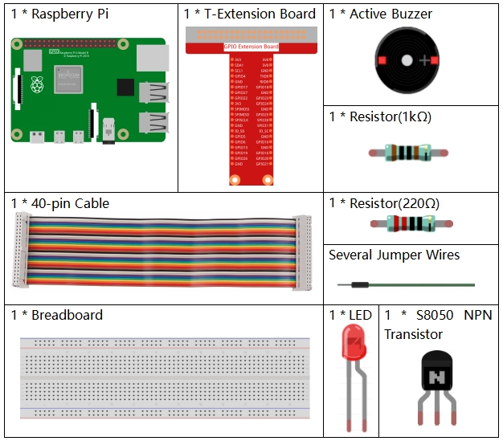

Bemerkung
Hallo und willkommen in der SunFounder Raspberry Pi & Arduino & ESP32 Enthusiasten-Gemeinschaft auf Facebook! Tauchen Sie tiefer ein in die Welt von Raspberry Pi, Arduino und ESP32 mit anderen Enthusiasten.
Warum beitreten?
Expertenunterstützung: Lösen Sie Nachverkaufsprobleme und technische Herausforderungen mit Hilfe unserer Gemeinschaft und unseres Teams.
Lernen & Teilen: Tauschen Sie Tipps und Anleitungen aus, um Ihre Fähigkeiten zu verbessern.
Exklusive Vorschauen: Erhalten Sie frühzeitigen Zugang zu neuen Produktankündigungen und exklusiven Einblicken.
Spezialrabatte: Genießen Sie exklusive Rabatte auf unsere neuesten Produkte.
Festliche Aktionen und Gewinnspiele: Nehmen Sie an Gewinnspielen und Feiertagsaktionen teil.
👉 Sind Sie bereit, mit uns zu erkunden und zu erschaffen? Klicken Sie auf [hier] und treten Sie heute bei!
3.1.11 Morsekode-Generator
Einführung
In dieser Lektion erstellen wir einen Morsekode-Generator, in den Sie eine Reihe englischer Buchstaben in den Raspberry Pi eingeben, damit er als Morsekode angezeigt wird.
Komponenten
Schematische Darstellung
T-Karte Name |
physisch |
wiringPi |
BCM |
GPIO17 |
Pin 11 |
0 |
17 |
GPIO22 |
Pin 15 |
3 |
22 |

Experimentelle Verfahren
Schritt 1: Bauen Sie die Schaltung auf. (Achten Sie auf die Pole des Summers: Der mit dem + Etikett ist der positive Pol und der andere der negative.)

Schritt 2: Öffnen Sie die Kodedatei.
cd ~/davinci-kit-for-raspberry-pi/c/3.1.11/
Schritt 3: Kompilieren Sie den Kode.
gcc 3.1.11_MorseCodeGenerator.c -lwiringPi
Schritt 4: Führen Sie die obige ausführbare Datei aus.
sudo ./a.out
Geben Sie nach dem Ausführen des Programms eine Reihe von Zeichen ein, und der Summer und die LED senden die entsprechenden Morsekodesignale.
Code Erklärung
struct MORSE{
char word;
unsigned char *code;
};
struct MORSE morseDict[]=
{
{'A',"01"}, {'B',"1000"}, {'C',"1010"}, {'D',"100"}, {'E',"0"},
{'F',"0010"}, {'G',"110"}, {'H',"0000"}, {'I',"00"}, {'J',"0111"},
{'K',"101"}, {'L',"0100"}, {'M',"11"}, {'N',"10"}, {'O',"111"},
{'P',"0110"}, {'Q',"1101"}, {'R',"010"}, {'S',"000"}, {'T',"1"},
{'U',"001"}, {'V',"0001"}, {'W',"011"}, {'X',"1001"}, {'Y',"1011"},
{'Z',"1100"},{'1',"01111"}, {'2',"00111"}, {'3',"00011"}, {'4',"00001"},
{'5',"00000"},{'6',"10000"}, {'7',"11000"}, {'8',"11100"}, {'9',"11110"},
{'0',"11111"},{'?',"001100"}, {'/',"10010"}, {',',"110011"}, {'.',"010101"},
{';',"101010"},{'!',"101011"}, {'@',"011010"}, {':',"111000"}
};
Diese Struktur MORSE ist das Wörterbuch des Morsecodes und enthält die Zeichen A-Z, die Zahlen 0-9 und die Zeichen „?“ „/“ „:“ “ “ „,“ „.“ „;“ „!“ „@“.
char *lookup(char key,struct MORSE *dict,int length)
{
for (int i=0;i<length;i++)
{
if(dict[i].word==key){
return dict[i].code;
}
}
}
Die Funktion lookup() funktioniert durch „Überprüfen des Wörterbuchs“.
Definieren Sie einen Schlüssel,
suchen Sie die gleichen Wörter wie den Schlüssel in der Struktur morseDict und geben Sie die entsprechenden Informationen zurück - „kode“ des bestimmten Wortes.
void on(){
digitalWrite(ALedPin,HIGH);
digitalWrite(BeepPin,HIGH);
}
Erstellen Sie eine Funktion on() , um den Summer und die LED zu starten.
void off(){
digitalWrite(ALedPin,LOW);
digitalWrite(BeepPin,LOW);
}
Die Funktion off() schaltet den Summer und die LED aus.
void beep(int dt){
on();
delay(dt);
off();
delay(dt);
}
Definieren Sie einen Funktionston beep() ,
damit der Summer und die LED in einem bestimmten Intervall von dt ertönen und blinken.
void morsecode(char *code){
int pause = 250;
char *point = NULL;
int length = sizeof(morseDict)/sizeof(morseDict[0]);
for (int i=0;i<strlen(code);i++)
{
point=lookup(code[i],morseDict,length);
for (int j=0;j<strlen(point);j++){
if (point[j]=='0')
{
beep(pause/2);
}else if(point[j]=='1')
{
beep(pause);
}
delay(pause);
}
}
}
Die Funktion morsecode() wird verwendet, um den Morsecode von Eingabezeichen zu verarbeiten,
indem die „1“ der Kode weiterhin Töne oder Lichter aussendet und die „0“ in Kürze Töne oder
Lichter aussendet, z. B. „SOS“ eingibt und dort wird ein Signal sein,
das drei kurze, drei lange und dann drei kurze Segmente · · · - - - · · · enthält.
int toupper(int c)
{
if ((c >= 'a') && (c <= 'z'))
return c + ('A' - 'a');
return c;
}
char *strupr(char *str)
{
char *orign=str;
for (; *str!='\0'; str++)
*str = toupper(*str);
return orign;
}
Vor dem Codieren müssen Sie die Buchstaben in Großbuchstaben vereinheitlichen.
void main(){
setup();
char *code;
int length=8;
code = (char*)malloc(sizeof(char)*length);
while (1){
printf("Please input the messenger:");
delay(100);
scanf("%s",code);
code=strupr(code);
printf("%s\n",code);
delay(100);
morsecode(code);
}
}
Wenn Sie die relevanten Zeichen mit der Tastatur eingeben, konvertiert
code=strupr(code) die Eingabebuchstaben in ihre Großbuchstaben.
printf() druckt dann den Klartext auf dem Computerbildschirm, und die Funktion
morsecod() bewirkt, dass der Summer und die LED Morsecode ausgeben.
Beachten Sie, die Länge des Eingabezeichens darf die
length nicht überschreiten(kann überarbeitet werden).